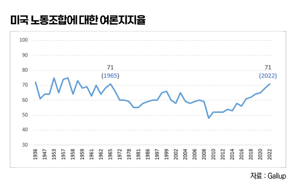
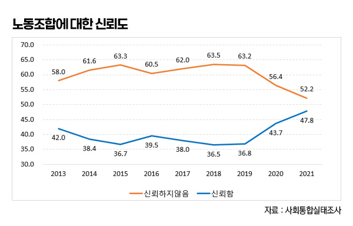
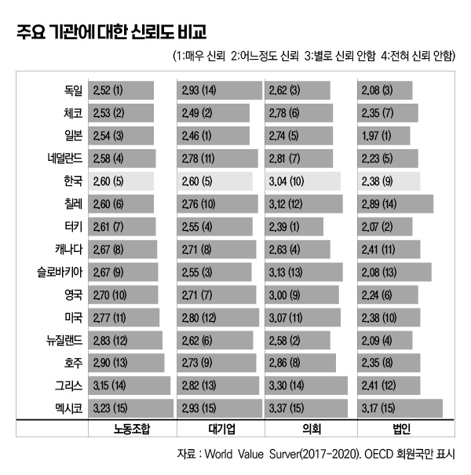
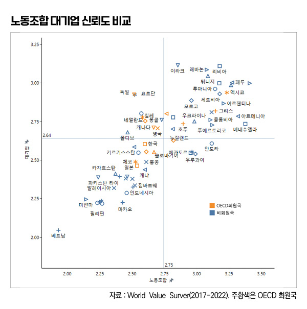

박영삼의 통계로 보는 노동
한국 노조 신뢰도 ‘국제비교 중간 수준’
세계가치관조사(WVS) 2017~2022 원자료 분석 … OECD 12개국 중 6위, 조사대상 62개국 중 27위
임금과 취업상태, 소득과 자산에 대한 통계가 있듯이 사회구성원들의 인식과 가치관에 대한 사회조사도 국가의 공식통계로 발표되고 국가 간에 비교된다. 그중에는 노동조합과 노사관계에 관한 국민인식조사도 포함된다.
최근 많이 회자된 통계 중에 ’46%’라는 숫자가 있었다. 한국리서치가 지난해 10월 발표한 노조에 관한 여론조사 결과였다. 노조가 노동자 권리 보호에 기여한다고 긍정적으로 생각하는 국민이 66%에 달했다. 하지만 “노조에 소속된 자신들의 이익만 챙기고 있다”고 생각하는 국민이 46%로 적지 않았다. 이와 함께 한국노동연구원의 2017년 조사결과도 다시 관심을 불러일으켰다. 당시 국민의 86%가 노조가 필요하다고 생각하면서도 현재 노조가 전체 노동자의 이익을 위해 일하고 있다고 생각하는 국민은 22%에 그쳤다. “노조간부와 일부 노동자의 이익을 위해 일하고 있다”고 응답한 비율이 공교롭게도 한국리서치 조사와 동일한 ’46%’로 나타났다. 노동계로서는 매우 따갑고 무거운 숫자로 다가왔을 통계였다.

노동연구원에 앞서 이 조사항목을 포함시켰던 것은 2013년의 한국종합사회조사(KGSS)였다. 종합사회조사는 “주기적이고 반복적인 방식으로 확률표집의 이상적 기준을 최대한 충족시키면서 국제비교연구를 가능케 한다”는 원칙하에 시작된 사회조사다. 국제사회조사인 ISSP의 한국조사 성격으로 진행되고 있었다. 이때 조사에서는 68%의 응답자가 노조가 필요하다고 답했다. 반면에 “조합간부나 일부 근로자의 이익을 위해 활동한다”고 노조를 부정적으로 평가한 비율은 56%에 달했다.
단순비교로만 보면 2013년 종합사회조사 결과와 한국노동연구원의 2017년, 한국리서치의 2022년의 결과는 노조의 필요성에 대한 긍정비율이 더 높아졌고(68%→86%), 노조가 일부만을 위해 일하고 있다는 부정응답 비율은 줄어든 것(56%→46%)으로 볼 수도 있다. 하지만 조사문항의 차이와 조사방법의 차이를 감안한다면 제대로 된 비교라고 할 수는 없다. 종합사회조사는 가구방문 면접조사에 가구원의 무작위추출 방식인 반면, 노동연구원 조사는 온라인조사이면서 임금노동자 일정비율 이상을 목표로 정해 할당한 방식이었다.
미국 갤럽은 수십년간 노조 관련 조사 우리나라는 드물어, 신뢰조사만 있어
미국 갤럽(Gallup)은 지난해 9월 중요한 여론조사 결과를 발표해 화제를 모았다. 미국 국민들의 노조에 대한 여론지지율이 71%로 1965년 이후 역대 최고를 기록했다는 뉴스였다. 이때 갤럽은 1936년 대공황 이후 자신들이 실시해 온 역대 여론조사에서 확인된 노조 지지율과 함께 다른 여러 항목의 노조·노동운동 관련 여론조사 통계치들을 함께 발표했다. 거기에는 노조가입률, 노조에 대한 신뢰 정도, 노조가입 의향, 향후 노동운동의 힘과 영향력이 어떻게 변화될지에 대한 생각 등도 포함됐다. CNBC 뉴스는 이 여론조사 결과를 보도하면서 여론지지율은 역대 최고이지만, 정작 임금노동자 비조합원 중에서 58%가 “노조가입에 관심이 없다”고 응답한 조사결과를 함께 인용했다. “여론 지지는 상승하고 있으나 임금노동자의 노조가입 의향률은 상승하지 않는 것이 실질적 문제”라는 해설기사를 내보냈다.

OECD 최하위 소득분배 개선 효과 더 떨어질 수도
저소득 빈곤층 위한 정부 역할 중요
오히려 2021년 가계금융복지조사에서 나타나는 소득분배 악화 흐름은 조세와 공적이전을 담당하는 정부의 역할이 중요하다는 사실을 다시 한번 확인시켜 주고 있다.
그렇다면 우리나라에는 동일항목에 대한 지속적이고 일관된 조사를 통해 노조에 대한 국민들의 생각과 여론을 확인할 수 있는 통계자료가 있을까? 사실 극히 드문 일이다. 앞서 말한 종합사회조사는 2014년 이후 2년마다 조사를 실시하는 것으로 변경됐고 최근에는 노동관련 조사항목이 거의 없는 편이다. 민간의 경우에도 미국의 갤럽과 같이 “(어떤 사람이) 노조를 지지하느냐 지지하지 않느냐?” “(어떤 사람이) 노조에 가입할 의향이 있느냐?”와 같은 직접적인 의향을 확인해 볼 수 있는 통계나 여론조사 자료는 없다. 대신 비슷한 통계가 매년 여기저기 다양한 기관에서 반복적으로 생산되는데, 그게 바로 ‘신뢰도(confidence)’ 조사다.

정부의 공식통계 가운데 한국행정연구원에서 표본가구원 8천명을 상대로 실시하고 있는 사회통합실태조사에는 노조 신뢰도 측정 항목이 있다. “귀하는 다음 기관들이 맡은 일을 얼마나 잘 수행하고 있다고 믿습니까?”라는 질문에 4점 척도로 응답하도록 돼 있다. 노조만 대상으로 하는 것이 아니고 시민단체·교육계·언론·종교계는 물론 중앙정부·지자체·정당·의회 등 다양한 기관들을 얼마나 신뢰하는지를 묻는 조사다. 2013년부터 지속된 이 조사의 결과는 노조를 신뢰하지 않는다는 응답비율이 신뢰한다는 응답에 비해 여전히 높지만, 그 차이가 빠르게 줄어들고 있다. 노조의 경우 불신 비율이 60%대 초반에서 50%대 초반으로 크게 감소했고, 신뢰비율은 30%대 중·후반에서 40%대 후반으로 크게 증가한 것으로 나타났다.
노조 신뢰도 대부분 선진국, 한국과 비슷 신뢰도보다 노조 지지·노조 가입 조사 필요해
한편 또 다른 대표적인 국제사회조사의 하나인 세계가치관조사(WVS)가 있다. 2017~2022년 원자료가 최근 공개됐는데 가구면접 조사한 62개국의 데이터가 수록돼 있으며 한국의 조사시점은 2018년이다. 이 조사에도 노조와 대기업·의회·법원에 대한 신뢰도 조사항목이 포함돼 있다.

분석 결과 한국의 노조 신뢰도는 4점 척도에서 평균 2.6점이었다. 점수가 낮을수록 신뢰도가 높다. 한국은 불신에 가까운 수치를 나타냈지만 경제협력개발기구(OECD) 15개 회원국 중 독일·체코·일본·네덜란드에 이어 5번째로 높은 신뢰도 수치를 기록했다. 한편 조사에 참여한 62개국 전체에서는 27위를 기록해 중간에서 약간 상위를 기록한 것으로 나타난다.
노조 신뢰도 1~3위는 베트남·미얀마·중국 등 사회주의 국가들이며, 이들 나라는 기업과 권력기관 신뢰도 모두 가장 높다. 반면 노조 신뢰도 최하위는 멕시코·아르헨티나 등 남미 국가들이 주로 차지한다. 이들 나라의 기업 신뢰도와 권력기관에 대한 신뢰도 모두 바닥 수준이다. 주요 선진국들은 노조 신뢰도가 주로 중간순위에 분포하고 있다. 독일의 경우 OECD 회원국 내에서는 평균 2.52점으로 1위를 차지했지만 62개국 전체 순위에서는 19위로 중위그룹에 속한다. 독일과 네덜란드 등 유럽 국가들은 대기업에 대한 신뢰도 평가가 매우 낮은 것으로 나타났다. 네덜란드는 대기업 신뢰도 순위 11위에 그쳤고 독일은 14위로 최하위를 기록했다. 대기업에 비판적인 국민의 여론이 기업의 노력을 더 자극하고 촉진한다고도 볼 수 있겠다.
한국의 대기업 신뢰도는 2.6점으로 노조와 동일한 점수를 기록했으며 OECD 회원국 중 신뢰도 5위로 노조와 순위도 동률을 기록했다. 과거 신뢰도가 많이 낮았지만 최근에 많이 상승한 것으로 나타났다. 우리나라 법원의 경우 국내 기관끼리 비교할 때는 노조보다 크게 신뢰도가 높았다. 하지만 OECD 회원국의 법원 신뢰도가 훨씬 더 높기 때문에 국가비교 순위에서는 9위에 머물렀으며, 국회는 법원보다 더 낮은 10위를 기록해 하위권에 머물렀다. 기관의 특성에 비춰 볼 때 일정하게 요구되는 신뢰도 수준이 있는 것이라고 볼 수 있다.
전체 62개국의 노조와 대기업에 대한 신뢰도를 하나로 표현한 것이 아래 그림이다. 평균선을 기준으로 4분면을 나누게 되면, 선진국들은 중간지대에 주로 분포하는 것을 알 수 있다. 유럽 국가들은 노조 신뢰도는 높은 대신 대기업 신뢰도가 낮은 좌상단에 위치하게 되며, 미국과 호주 등은 노조와 대기업 모두 신뢰도가 낮은 우상단 유형에 속하게 된다. 한국은 일본·터키 등과 함께 노조와 대기업 모두 신뢰도가 평균보다 높은 유형으로 좌하단에 속하게 된다.
그렇다면 한국이 노조와 기업 모두 신뢰도가 높은 모범 국가라고 말할 수 있는 것일까. 그렇지는 않겠지만 한국의 노조가 신뢰도가 형편없이 낮은 것은 아니며, 대기업이나 법원과 권력기관에 비해 형편없는 평가를 받고 있는 것도 아니라는 점은 알 수 있다. 노조가 좋은 신뢰도 평가를 받는 것은 어느 나라든 쉽지 않은 일인 것 같다. 노조의 노력이 부족한 것도 있지만 시민들의 눈높이도 그만큼 높기 때문이다. 그리고 그러한 요구와 바람은 노동운동의 장애물이 아니라 디딤돌이 될 수 있다. 그리고 이제는 노동운동에 대한 올바른 측정지표를 위해서라도 신뢰도 측정과는 구별되는 알찬 내용의 정기적이고 반복적인 통계조사가 필요해 보인다.

박영삼 고려대 노동문제연구소 노동데이터센터장 (youngsampk@gmail.com)
출처 : 매일노동뉴스(http://www.labortoday.co.kr)